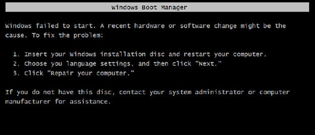
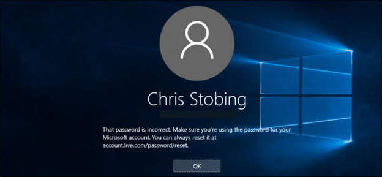
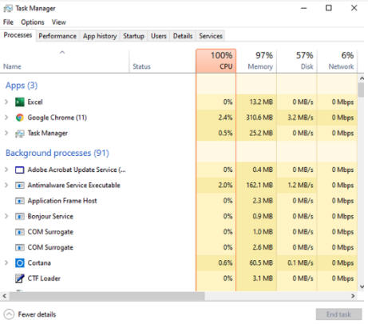

a) Kiểm tra sự cố Hệ điều hành
- Không khởi động: Mất tập tin khởi động.
- Không đăng nhập vào Window:
+ Tài khoản bị Disable
+ Quên Password
+ Do virus thay đổi thông số hệ thống
- Window chạy chậm, hay xuất hiện lỗi.

- Window chạy chậm, hay xuất hiện lỗi.
+ Kiểm tra tài nguyện hệ thống (Phần cứng, phần mềm)
+ Kiểm tra tối ưu hóa hệ thống (Phần cứng, phần mềm)
b) Kiểm tra tính tương thích
- Cấu hình máy theo yêu cầu của Hệ điều hành và các chương trình. Mỗi Hệ điều hành đều có yêu cầu riêng với các chương trình chạy trên đó.
- Xung đột giữa Hệ điều hành và các ứng dụng. Đụng chạm giữa các File.dll của hệ thống và chương trình.
- Xung đột giữa các trình điều khiển. Xảy ra tranh chấp giữa trình điều khiển mới và trình điều khiển cũ khi tiến hành nâng cấp thiết bị (Không gỡ bỏ driver của thiết bị cũ).
- Xung đột giữa các chương trình ứng dụng. Đụng chạm giữa các File.dll giữa ứng dụng này với ứng dụng khác.